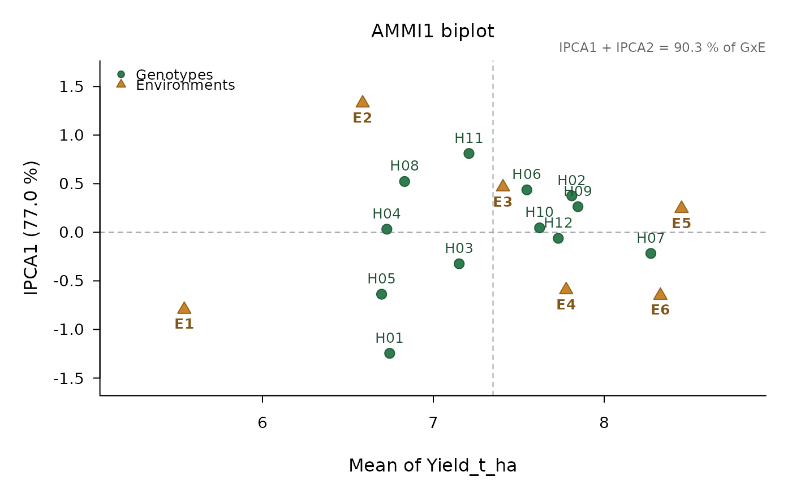
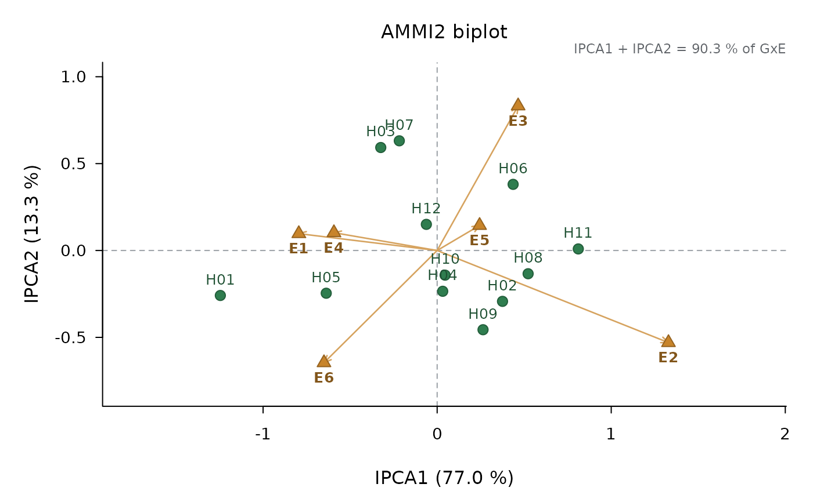

Additive main effects and multiplicative interaction model (Gollob 1968; Gauch 1988): the analysis of variance of genotypes and environments, and the singular value decomposition of the genotype x environment interaction into principal axes (IPCA), each tested with the degrees of freedom of Gollob (1968).
Usage
ammi(
data,
response,
genotype,
environment,
block = NULL,
mse = NULL,
df_error = NULL,
reps = 1,
n_axes = NULL
)Arguments
- data
A data frame in long format.
- response
Name of the numeric response column.
- genotype, environment
Names of the genotype and environment columns.
- block
Optional name of the block (replicate) column; blocks are taken as nested within environments.
- mse, df_error
Error mean square (plot scale) and its degrees of freedom, only when the data hold one mean per cell.
- reps
Number of replicates behind each mean, when the data hold one mean per cell.
- n_axes
Number of interaction axes shown in the analysis of variance (the rest is pooled as the residual interaction); by default all of them.
Value
An object of class "ad_ammi": the analysis of variance
(anova), the interaction axes (axes: singular value, sum of
squares, percentage of the interaction, Gollob degrees of freedom and F
test), genotype and environment means with their scores (genotypes,
environments, the first with ASV and YSI), the table of means and the
interaction residuals.
Details
The data must be balanced: every genotype in every environment with the
same number of replicates. With plot data the error comes from the trial
itself (with block, blocks within environments are taken out and
environments are tested against them). With one mean per cell, give the
pooled error of the trial (mse, on the plot scale, with df_error) and
the number of replicates behind each mean (reps).
Interaction scores are scaled by the square root of the singular values
(symmetric scaling), so that the product of a genotype score and an
environment score is their interaction. The sign of every axis is fixed so
that the environment with the largest absolute score is positive.
The AMMI stability value (ASV) of Purchase et al. (2000) is
sqrt((SS1 / SS2 * IPCA1)^2 + IPCA2^2); the yield stability index (YSI)
adds its rank to the rank of the mean (highest mean = 1).
References
Gollob, H. F. (1968) Psychometrika 33, 73-115. Gauch, H. G. (1988) Biometrics 44, 705-715. Purchase, J. L., Hatting, H. and van Deventer, C. S. (2000) South African Journal of Plant and Soil 17, 101-107.
Examples
fit <- ammi(maize_met, "Yield_t_ha", "Hybrid", "Environment", block = "Block")
fit
#>
#> AMMI analysis (additive main effects and multiplicative interaction)
#> Response: Yield_t_ha 12 genotypes x 6 environments, 3 replicate(s) per cell
#>
#> Df Sum Sq Mean Sq F value Pr(>F)
#> ENV 5 223.530 44.70598 640.9333 3.934e-14 ***
#> REP(ENV) 12 0.837 0.06975 0.7751 6.751e-01
#> GEN 11 55.358 5.03256 55.9199 3.083e-44 ***
#> GxE 55 46.314 0.84207 9.3567 7.883e-26 ***
#> IPCA1 15 35.672 2.37814 26.4250 1.433e-32 ***
#> IPCA2 13 6.148 0.47291 5.2548 1.623e-07 ***
#> IPCA3 11 2.166 0.19693 2.1883 1.857e-02 *
#> IPCA4 9 1.932 0.21471 2.3858 1.553e-02 *
#> IPCA5 7 0.395 0.05642 0.6270 7.329e-01
#> Residuals 132 11.879 0.09000
#> Total 215 337.918 1.57171
#>
#> Tested against another mean square:
#> ENV vs REP(ENV)
#> ---
#> Signif. codes: 0 '***' 0.001 '**' 0.01 '*' 0.05 '.' 0.1 ' ' 1
#>
#> Interaction principal components (degrees of freedom of Gollob 1968):
#> Axis Singular value % of GxE Cumulative % Df
#> IPCA1 3.4483 77.0230 77.02 15
#> IPCA2 1.4315 13.2743 90.30 13
#> IPCA3 0.8498 4.6774 94.97 11
#> IPCA4 0.8026 4.1725 99.15 9
#> IPCA5 0.3628 0.8528 100.00 7
#>
#> Genotypes (scores scaled by the square root of the singular values):
#> genotype mean IPCA1 IPCA2 IPCA3 IPCA4 IPCA5 asv rank_asv
#> H01 6.744 -1.24559 -0.258888 -0.37635 -0.03218 -0.16010 7.2320 12
#> H02 7.810 0.37546 -0.292771 -0.40520 -0.24545 -0.04840 2.1982 7
#> H03 7.151 -0.32400 0.592630 0.25185 -0.14068 0.01651 1.9712 6
#> H04 6.728 0.03191 -0.234722 -0.11019 0.33904 0.16551 0.2990 1
#> H05 6.697 -0.63723 -0.245923 0.24978 -0.07036 0.31191 3.7056 10
#> H06 7.547 0.43642 0.380649 -0.06068 -0.26766 -0.20347 2.5608 8
#> H07 8.273 -0.21749 0.631256 -0.14614 -0.09191 0.17254 1.4111 4
#> H08 6.832 0.52259 -0.133743 -0.08028 0.05611 -0.09564 3.0352 9
#> H09 7.846 0.26358 -0.455973 0.36295 -0.46052 -0.02437 1.5959 5
#> H10 7.622 0.04554 -0.141894 0.45488 0.30089 -0.16773 0.2999 2
#> H11 7.208 0.81086 0.008989 -0.18422 0.18793 0.24058 4.7050 11
#> H12 7.731 -0.06205 0.150390 0.04360 0.42479 -0.20735 0.3902 3
#> rank_mean ysi
#> 10 22
#> 3 10
#> 8 14
#> 11 12
#> 12 22
#> 6 14
#> 1 5
#> 9 18
#> 2 7
#> 5 7
#> 7 18
#> 4 7
#>
#> Environments:
#> environment mean IPCA1 IPCA2 IPCA3 IPCA4 IPCA5
#> E1 5.542 -0.7948 0.09704 0.07162 0.71440 -0.02413
#> E2 6.586 1.3289 -0.53007 0.21902 0.16833 -0.10965
#> E3 7.407 0.4653 0.83225 -0.32260 -0.11686 -0.23112
#> E4 7.777 -0.5931 0.10250 0.65074 -0.41498 -0.06342
#> E5 8.453 0.2439 0.14419 -0.11232 -0.08474 0.53123
#> E6 8.329 -0.6502 -0.64591 -0.50646 -0.26615 -0.10291
#>
#> ASV: AMMI stability value (Purchase et al. 2000); YSI = rank of ASV + rank of the mean.
plot(fit)

plot(fit, type = "ammi2")
